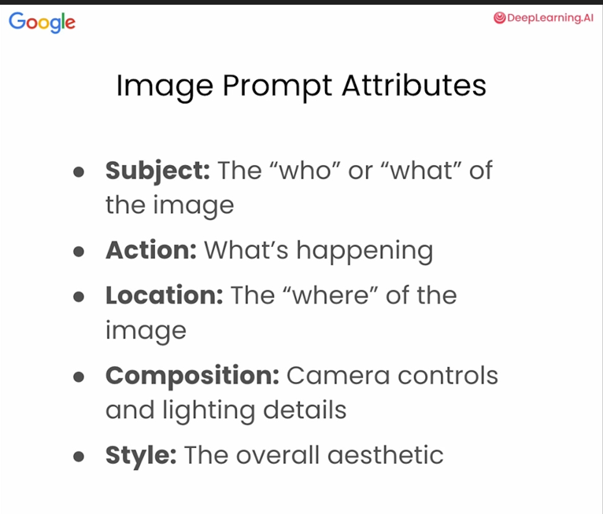

Studio Kairos · Internship · Day 1
Build something that serves people well.
Go around the room and share:
Use the arrow keys (↓) to go through each reason.
A business that lasts isn't about you — it's about how well you serve someone else.
Money is the result of service, not the goal.
Every great business removes a pain from someone's life.
No pain → no reason for a customer to pay you.
Freedom over your time, your income, and the kind of work you do.
Freedom is earned by serving consistently.
The purpose of a business is to serve others well.
Profit follows purpose — not the other way around.
Go beyond what the customer expects.
An experience so good it becomes a memory.
A student who finally "gets it" and feels confident.
It's simpler than people think.
Your 24/7 storefront. It builds trust before you ever speak.
Your first customers and your first referrals start here.
How the right people find out you exist.
A simple, physical way to be remembered after you meet someone.
↓ more
9 personality types — 9 different ways of seeing the world.
Knowing your type helps you understand yourself, your teammates, and your future customers.
1
Core motivation: to be good, right, and have integrity.
Core fear: being corrupt, wrong, or defective.
Ones are principled, purposeful, and self-controlled. They have a strong inner critic and hold themselves — and others — to high standards. They want to improve the world and do things the right way.
Weaknesses: overly critical of themselves and others, difficulty relaxing, rigid thinking, can come across as preachy or judgmental.
Examples: Nelson Mandela, Michelle Obama, Tina Fey.
2
Core motivation: to be loved and needed.
Core fear: being unwanted or unworthy of love.
Twos are warm, caring, and people-pleasing. They intuitively sense what others need and love to give — but can struggle to ask for help themselves. They often put others first, sometimes at their own expense.
Weaknesses: difficulty setting boundaries, can become clingy or manipulative when unappreciated, neglect their own needs, give to get rather than give freely.
Examples: Mother Teresa, Dolly Parton, Princess Diana.
3
Core motivation: to feel valuable through success.
Core fear: being worthless or a failure.
Threes are driven, ambitious, and image-conscious. They adapt to whatever will make them look successful and are incredibly efficient. They thrive in competition and love setting — and hitting — big goals.
Weaknesses: can be out of touch with their true feelings, prioritize image over authenticity, workaholism, struggle to slow down or be vulnerable.
Examples: Taylor Swift, Oprah Winfrey, Tom Cruise.
4
Core motivation: to be unique and authentic.
Core fear: having no identity or significance.
Fours are creative, emotionally deep, and introspective. They feel different from others and often romanticize what's missing in their lives. They express themselves through art, style, and authentic storytelling.
Weaknesses: prone to moodiness and self-pity, can dwell in melancholy, envy others who seem more "normal," and withdraw when feeling misunderstood.
Examples: Frida Kahlo, Johnny Depp, Bob Dylan.
5
Core motivation: to be capable and competent.
Core fear: being useless, helpless, or overwhelmed.
Fives are analytical, perceptive, and private. They prefer to observe before acting and love mastering deep knowledge. They conserve energy and often need alone time to recharge and process.
Weaknesses: can be emotionally detached, hoard time and energy, overthink instead of act, and come across as cold or distant in relationships.
Examples: Albert Einstein, Bill Gates, Mark Zuckerberg.
6
Core motivation: to have security and support.
Core fear: being without guidance or safety.
Sixes are responsible, reliable, and anxious planners. They are loyal to people and systems they trust and always think ahead for what could go wrong. They can be both fearful and courageous — facing fears head-on.
Weaknesses: chronic self-doubt, can be suspicious or paranoid, seek constant reassurance, and may struggle to make decisions without external validation.
Examples: Ellen DeGeneres, Spike Lee, Malala Yousafzai.
7
Core motivation: to be happy and satisfied.
Core fear: being deprived or trapped in pain.
Sevens are spontaneous, versatile, and fun-loving. They generate endless ideas and experiences, chasing the next exciting thing. They avoid pain through distraction and optimism, but can scatter their energy.
Weaknesses: poor follow-through, difficulty sitting with discomfort or boredom, can be impulsive and overcommit, struggle to be present and go deep.
Examples: Robin Williams, Elton John, Miley Cyrus.
8
Core motivation: to be strong and in control.
Core fear: being controlled or harmed by others.
Eights are confident, decisive, and confrontational. They take charge naturally and protect the people they care about. They respect honesty and directness, and have little patience for weakness or deception.
Weaknesses: can be domineering or intimidating, struggle to show vulnerability, may steamroll others, and have a hard time admitting they're wrong.
Examples: Martin Luther King Jr., Winston Churchill, Serena Williams.
9
Core motivation: to have inner and outer peace.
Core fear: loss, separation, and conflict.
Nines are easygoing, reassuring, and agreeable. They can see all sides of an issue and naturally mediate conflict. They tend to go along to avoid tension, sometimes losing touch with their own desires and priorities.
Weaknesses: avoidance of conflict, tendency to "check out" or procrastinate, difficulty asserting their own needs, can become passive-aggressive when pushed.
Examples: Abraham Lincoln, Barack Obama, Keanu Reeves.
⏱ 20 min Take the free test:
Be honest — answer how you actually are, not how you wish to be.
I offer private tutoring for students in Math, Science, and AI
Give students skills to be successful in life
Vision is the second column. Sell that.
8 pieces every business needs. ↓
In one sentence — what does your business do, and for whom?
Where is this going? What change do you want to create?
Who exactly are you serving?
Demographics + their pain points.
Who are your competitors, and what are they doing?
What makes you different or better than them?
Flyers · SEO · social media · email · phone calls · local network
Are you a budget provider or a premium one?
Both can win — pick one on purpose.
Getting customers — and keeping them.
Everything else is solvable. This is the part you must practice every single day.
Getting the right message to the right person. ↓
What problem keeps your customer up at night?
A specific, made-up person who represents your ideal customer.
Name, age, goals, frustrations — make them feel real.
Create User Personas for Clear Lake Tutor- 10 minute
https://kmarq.netlify.app/squarify
How does your brand sound? Fun? Trusted? Expert? Warm?
⏱ 15 min
Find the pain points and personas of Clear Lake Tutor.
Let's look at a real persona + pain-point breakdown together.
Good design makes people trust you instantly.
Definition: software that can learn from data and perform tasks that normally need human intelligence.
Use cases: writing, research, design, planning, tutoring.
Generative AI: AI that creates new content — text, images, and audio.
Garbage In → Garbage Out
⏱ 5 min
Use the AGENT framework to write a prompt that finds user personas for Clear Lake Tutor.

⏱ 10 min
Pick a user persona and generate an image that speaks directly to that user's pain point.
Three big players — each is best at something different. ↓
Definition: AI that can take actions — create files, write code, generate images, and do deep planning.
Examples: Claude Code building a website, an agent researching and drafting a report on its own.
Definition: the small chunks of text AI reads and writes (roughly ¾ of a word each).
Example: "Clear Lake Tutor" ≈ 4 tokens.
Pricing: models charge per million tokens — Gemini is cheapest, Claude costs more, ChatGPT sits in the middle.
Definition: how much the AI can "remember" in one conversation.
Example: a long chat eventually forgets the start.
Ways to reduce it:
Definition: saved, reusable AI setups with your own instructions and files built in.
Use cases: a "CLT Marketing" assistant, a chemistry tutor, a brand-voice writer — set it up once, reuse it forever.
Definition: the AI browses many sources and writes a thorough, cited report for you.
Use cases: competitor analysis, market research, understanding a new client's industry.
Ctrl + CCtrl + VWin + Shift + SDefinition: a chat that isn't saved to the AI's memory.
Why use it: for one-off questions you don't want disrupting your AI's long-term memory and context.
Your job is to find — and measure — their pain.
Tailored to what each of you wants to grow in. ↓
Research the business & the person first. Starter prompt:
"I'm doing marketing for this website. Tell me everything — descriptions, values, events, tone, services. The owner is Mason Tang, who lives in Houston, TX; tell me about him too. I want as much as possible so I can talk to the client easily."
Build chemistry education content:
Go slow. Stay curious. Serve people well.
Looking ahead: on the last day you'll build and pitch your own business — plan + website.
And we'll have a 1-on-1 if you'd like to keep interning after this.